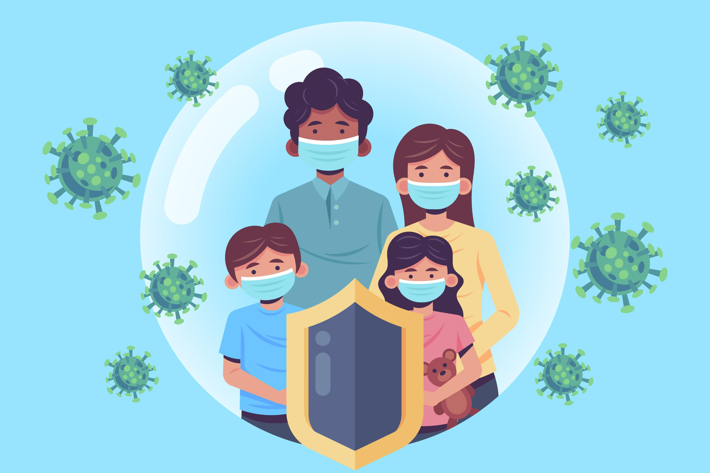

Tanggung Jawab kita dalam menyikapi pandemik COVID-19
Apa itu COVID 19? Penyakit coronavirus (COVID-19) adalah penyakit menular yang disebabkan oleh virus jenis baru yang belum pernah teridentifikasi pada manusia. Virus ini menyebabkan penyakit di saluran pernapasan (seperti flu) dengan gejala batuk, demam, dan pada kasus yang lebih serius, pneumonia.
Jadi disini saya akan menyampaikan pendapat saya mengenai rasa tanggung jawab sebagai pribadi, anggota keluarga, dan anggota masyarakat dalam menyikapi kondisi Indonesia saat ini yang sedang dilanda pandemic COVID 19.
Tanggung jawab sebagai pribadi. Dalam menyikapi situasi saat ini, tanggung jawab kita sebagai pribadi menurut saya bisa dengan melakukan hal hal yang terlihat mudah dan sangat membantu mengurangi terkena covid19 seperti kita dapat sering mencuci tangan dengan teliti, kurangi keluar rumah bahkan jika bisa cukup dirumah saja jangan keluar jika mendesak, dll. Menurut saya hal hal seperti disebutkan tadi merupakan tanggung jawab sebagai pribadi yang dapat kita lakukan untuk saat ini.
Tanggung jawab sebagai anggota keluarga. Yang dapat kita lakukan sebagai anggota keluarga dimana kita sebagai yang muda dimana lebih mudah mengakses informasi, sudah selayaknya kita memberikan informasi yang benar tersebut kepada keluarga. Sebagai contoh saat ada informasi adanya PSBB di internet, kita dapat mengecek kevalidan berita tersebut dan jika sudah valid kita informasikan dan mengedukasinya kepada keluarga yang belum mengetahuinya.
Untuk tanggung jawab sebagai anggota masyarakat, dapat kita lakukan seperti mematuhi himbauan yang sudah diberikan oleh rt atau rw untuk mengikuti aturan PSBB untuk mencegah penularan lebih banyak kasus covid19. Dengan mematuhi himbauan tersebut kita sudah melakukan tanggung jawab kita sebagai anggota masyarakat.
Dari semua rasa tanggung jawab, kita dapat simpulkan bahwa kita sebagai manusia haruslah menjalankan rasa tanggung jawab selagi kita masih hidup. Karena dengan melaksanakan suatu tanggung jawab, manusia baru bisa dikatakan manusia yang seutuhnya. Semoga pandemik ini cepat berlalu dan kita semua diberikan kesehatan selalu. Terimakasih.

2
Like